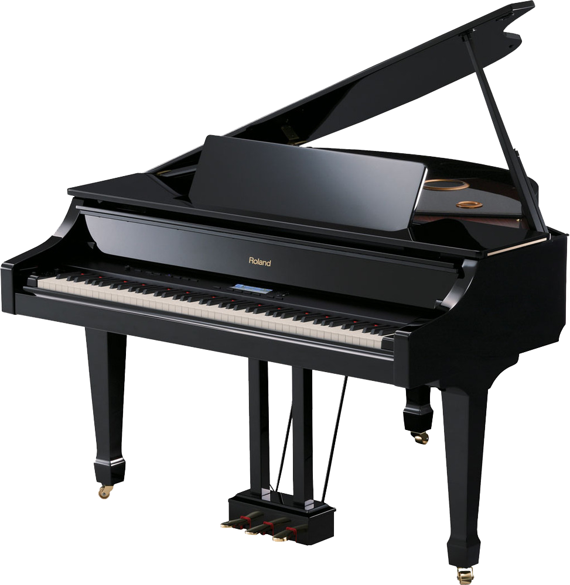

A piano is a keyboard instrument that produces sound when its keys are pressed, activating an action mechanism where hammers strike strings. Modern pianos have a row of 88 black and white keys—with the exception of the Bosendörfer and Stuart & Sons pianos—and tuned to a chromatic scale in equal temperament. A musician who specializes in piano is called a pianist.
There are two main types of piano: the grand piano and the upright piano. The grand piano offers better sound and more precise key control, making it the preferred choice when space and budget allow. The grand piano is also considered a necessity in venues hosting skilled pianists. The upright piano is more commonly used because of its smaller size and lower cost.
When a key is depressed, the strings inside are struck by felt-coated wooden hammers. The vibrations are transmitted through a bridge to a soundboard that amplifies the sound by coupling the acoustic energy to the air. When the key is released, a damper stops the string's vibration, ending the sound. Most notes have three strings, except for the bass, which graduates from one to two. Notes can be sustained when the keys are released by the use of pedals at the base of the instrument, which lift the dampers off the strings. The sustain pedal allows pianists to connect and overlay sound, and achieve expressive and colorful sonority.